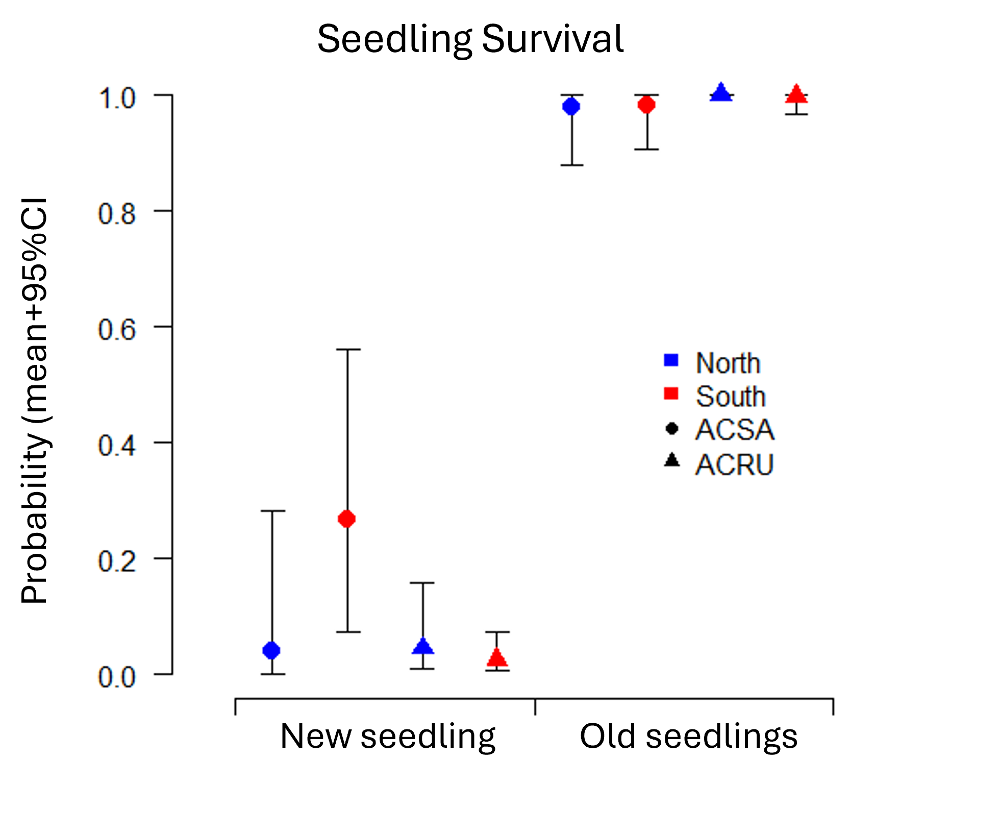
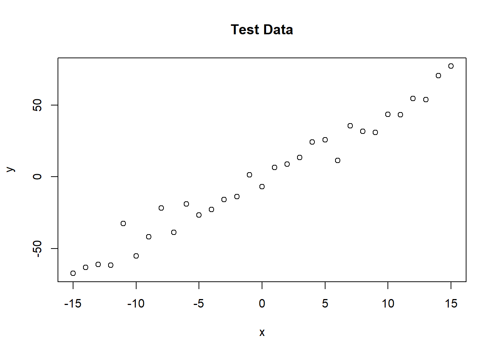
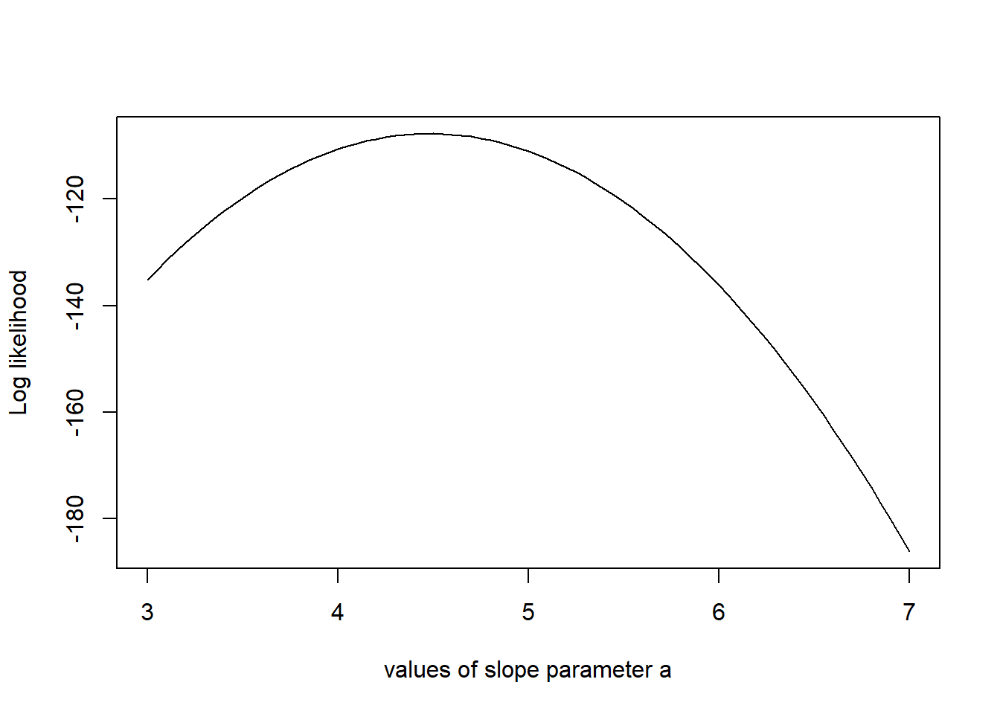
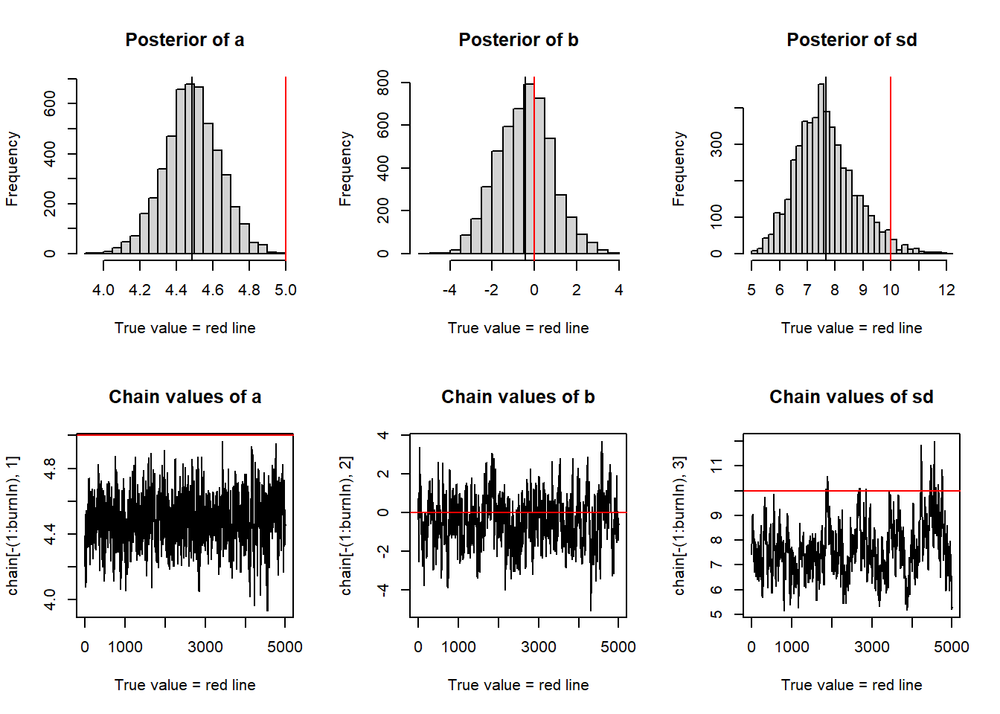

Example of a plot I made for my senior thesis project: “Heterogeneous Responses to Temperature, Precipitation, and Snowpack across Sites and Age classes in Acer rubrum and A. saccharum”
# Differences in Survival
# Load Data
Survdata <- read.csv("Survival Data.csv", header=TRUE)
#Overall Plot space
windows(height=5, width=6);
#New plot
plot.new();
# Margins (bottom, left, top, right)
par(mar = c(4,5,2,3))
# Plot window limits
plot.window(xlim=c(0, 9), ylim=c(0, 1))
# add axes
axis(side=1, at = c(0.5, 4.5, 8.5), labels = FALSE, cex=1.25, lwd=1.25, xlim=c(0.5, 8.5));
axis(side=2, las=1, cex=1.25, lwd=1.25);
# axis labels done in powerpoint
# Colors for Regions
region_categories <- unique(Survdata$Region) # Get the two unique region values
colors <- c("blue", "red") # Assign distinct colors
color_map <- setNames(colors, region_categories) # Create a named vector for mapping
# Check Categorization
print(color_map)
# Shapes for Species
species_categories <- unique(Survdata$Sp) # Get the two unique species values
shapes <- c(16, 17)
shape_map <- setNames(shapes, species_categories)
# Check Categorization
print(shape_map)
# PLOT DATA
for (j in 1:8) {
# point color
colorz <- color_map[as.character(Survdata$Region[j])]
# Determine point shape based on 'region' column
point_shape <- shape_map[as.character(Survdata$Sp[j])]
# Vertical bar (confidence intervals)
lines(x = c(j, j), y = c(Survdata[j, "survivalow"], Survdata[j, "survivalhigh"]))
# Whiskers
lines(x = c(j - 0.15, j + 0.15), y = c(Survdata[j, "survivalow"], Survdata[j, "survivalow"]))
lines(x = c(j - 0.15, j + 0.15), y = c(Survdata[j, "survivalhigh"], Survdata[j, "survivalhigh"]))
# Mean point
points(x = j, y = Survdata[j, "survivalmean"], pch = point_shape, col = colorz, cex = 1.4)
}
# Add a legend
legend(x = 6, y = 0.6,
legend = c("North", "South", "ACSA", "ACRU"),
pch = c(15, 15, 16, 17), # Use the same pch values as for points
col = c("blue", "red", "black", "black"), # Set the colors for the points
cex = 1,
bty = "n"
) *Figure axis titles added in post via powerpoint
This is generalized example of the modeling approach used by my advisor Dr. Inés Ibáñez to predict survival of seedlings using environmental parameters: Markov Chain Monte Carlo (MCMC). This is taken from this website: https://theoreticalecology.wordpress.com/2010/09/17/metropolis-hastings-mcmc-in-r/
# Making the base model with the true values
trueA = 5
trueB = 0
trueSd = 10
sampleSize = 31
# create independent x-values
x =(-(sampleSize-1)/2):((sampleSize-1)/2)
# create dependent values according to ax + b + N(0,sd)
y = trueA * x + trueB + rnorm(n=sampleSize,mean=0,sd=trueSd)
plot(x,y, main="Test Data")
likelihood = function(param){
a = param[1]
b = param[2]
sd = param[3]
pred = a*x + b
singlelikelihoods = dnorm(y, mean = pred, sd = sd, log = T)
sumll = sum(singlelikelihoods)
return(sumll)
}
# Example: plot the likelihood profile of the slope a
slopevalues = function(x){return(likelihood(c(x, trueB, trueSd)))}
slopelikelihoods = lapply(seq(3, 7, by=.05), slopevalues )
plot (seq(3, 7, by=.05), slopelikelihoods , type="l", xlab = "values of slope parameter a", ylab = "Log likelihood")
# Prior distribution
prior = function(param){
a = param[1]
b = param[2]
sd = param[3]
aprior = dunif(a, min=0, max=10, log = T)
bprior = dnorm(b, sd = 5, log = T)
sdprior = dunif(sd, min=0, max=30, log = T)
return(aprior+bprior+sdprior)
}
posterior = function(param){
return (likelihood(param) + prior(param))
}
######## Metropolis algorithm ################
proposalfunction = function(param){
return(rnorm(3,mean = param, sd= c(0.1,0.5,0.3)))
}
######## Metropolis algorithm ################
proposalfunction = function(param){
return(rnorm(3,mean = param, sd= c(0.1,0.5,0.3)))
}
run_metropolis_MCMC = function(startvalue, iterations){
chain = array(dim = c(iterations+1,3))
chain[1,] = startvalue
for (i in 1:iterations){
proposal = proposalfunction(chain[i,])
probab = exp(posterior(proposal) - posterior(chain[i,]))
if (runif(1) < probab){
chain[i+1,] = proposal
}else{
chain[i+1,] = chain[i,]
}
}
return(chain)
}
startvalue = c(4,0,10)
chain = run_metropolis_MCMC(startvalue, 10000)
burnIn = 5000
acceptance = 1-mean(duplicated(chain[-(1:burnIn),]))
### Summary: #######################
par(mfrow = c(2,3))
hist(chain[-(1:burnIn),1],nclass=30, , main="Posterior of a", xlab="True value = red line" )
abline(v = mean(chain[-(1:burnIn),1]))
abline(v = trueA, col="red" )
hist(chain[-(1:burnIn),2],nclass=30, main="Posterior of b", xlab="True value = red line")
abline(v = mean(chain[-(1:burnIn),2]))
abline(v = trueB, col="red" )
hist(chain[-(1:burnIn),3],nclass=30, main="Posterior of sd", xlab="True value = red line")
abline(v = mean(chain[-(1:burnIn),3]) )
abline(v = trueSd, col="red" )
plot(chain[-(1:burnIn),1], type = "l", xlab="True value = red line" , main = "Chain values of a", )
abline(h = trueA, col="red" )
plot(chain[-(1:burnIn),2], type = "l", xlab="True value = red line" , main = "Chain values of b", )
abline(h = trueB, col="red" )
plot(chain[-(1:burnIn),3], type = "l", xlab="True value = red line" , main = "Chain values of sd", )
abline(h = trueSd, col="red" )
# for comparison:
summary(lm(y~x))##
## Call:
## lm(formula = y ~ x)
##
## Residuals:
## Min 1Q Median 3Q Max
## -15.0504 -4.2746 -0.7423 4.2697 17.1808
##
## Coefficients:
## Estimate Std. Error t value Pr(>|t|)
## (Intercept) -0.5234 1.3175 -0.397 0.694
## x 4.4857 0.1473 30.452 <2e-16 ***
## ---
## Signif. codes: 0 '***' 0.001 '**' 0.01 '*' 0.05 '.' 0.1 ' ' 1
##
## Residual standard error: 7.336 on 29 degrees of freedom
## Multiple R-squared: 0.9697, Adjusted R-squared: 0.9686
## F-statistic: 927.3 on 1 and 29 DF, p-value: < 2.2e-16